Scale from Zero to Millions of Users
Ek single server se shuru karke step-by-step millions users tak kaise pahunchein — har component kis bottleneck ko hatata hai, kyun aur kis trade-off ke saath.
Introduction: Zero se Millions tak
Koi bhi bada system pehle din se "millions of users" ke liye design nahi hota. Instagram, Swiggy, Zerodha — sab ek chhoti setup se start hue aur iteratively scale hue. Is chapter ka goal ek mental model dena hai: har naya component ek specific bottleneck hatane ke liye aata hai. Interview mein bhi yahi dikhana hai — "Main X add kar raha hoon kyunki Y bottleneck hai", na ki buzzword bingo.
1. Single Server Setup
Shuruat mein sab kuch — web app, database, cache — ek hi machine pe chalta hai. Ye bilkul theek hai jab tak traffic kam hai; simple deployment, kam cost.
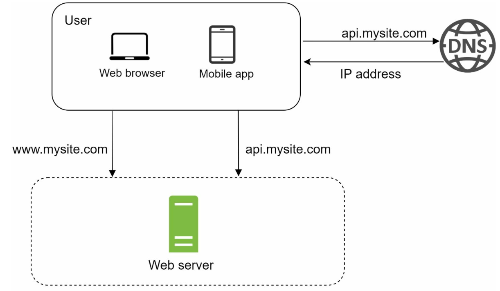
api.mysite.com poochta hai, DNS IP address return karta hai. Phir dono clients (www.mysite.com aur api.mysite.com) seedha ek hi Web server ko hit karte hain. Yahan koi redundancy nahi hai — ye box gaya to poori site gayi.Request flow
- User domain (e.g.
api.mysite.com) se access karta hai. DNS (usually third-party, jaise Route 53 / Cloudflare) domain ko IP address mein resolve karta hai. - IP address browser/mobile app ko wapas milta hai.
- Client us IP pe HTTP request bhejta hai; server HTML (web) ya JSON (mobile/API) return karta hai.
Traffic sources
- Web application: server-side language (Java/Spring, Python) business logic ke liye, client-side (JS/HTML) presentation ke liye.
- Mobile application: HTTP + JSON se baat karta hai — JSON lightweight hai aur har platform parse kar leta hai.
GET /users/12 HTTP/1.1
Host: api.mysite.com
{ "id": 12, "firstName": "John", "lastName": "Smith", "age": 25 }2. Database ko alag karo
Users badhe to pehla split: web/mobile traffic tier aur data tier alag servers pe. Ab dono ko independently scale kar sakte ho — web tier CPU-bound hota hai, DB tier I/O + memory bound. Ek machine pe dono resources ke liye ladte hain.
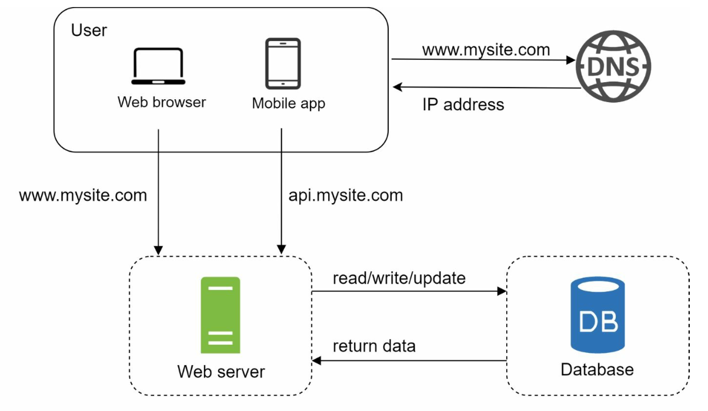
SQL ya NoSQL?
| Aspect | Relational (SQL) | Non-relational (NoSQL) |
|---|---|---|
| Examples | MySQL, PostgreSQL, Oracle | Key-value (Redis, DynamoDB), Column (Cassandra, HBase), Document (MongoDB), Graph (Neo4j) |
| Data model | Tables + rows, fixed schema, JOINs | Flexible schema, usually no JOINs |
| Strength | ACID transactions, 40+ saal ka maturity | Super-low latency, massive data, easy horizontal scale |
| Kab chunein | Default choice; relational data, transactions (payments, orders) | Unstructured data, sirf serialize/deserialize (JSON/XML/YAML), bahut bada data, very low latency |
3. Vertical vs Horizontal Scaling
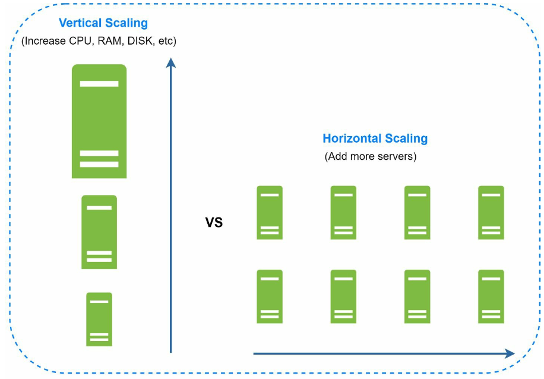
| Vertical (scale up) | Horizontal (scale out) | |
|---|---|---|
| Kya karte ho | Same server mein zyada CPU/RAM | Pool mein aur servers add |
| Simplicity | Bahut simple, code change nahi | LB, stateless design, distributed problems |
| Limit | Hardware ki hard limit hai — unlimited CPU/RAM nahi laga sakte | Practically bahut door tak scale |
| Failover | Koi redundancy nahi — server down = site down | Ek server gaya to baaki handle karte hain |
Low traffic pe vertical scaling great option hai. Lekin large-scale apps ke liye horizontal hi rasta hai — aur uske liye chahiye load balancer.
4. Load Balancer
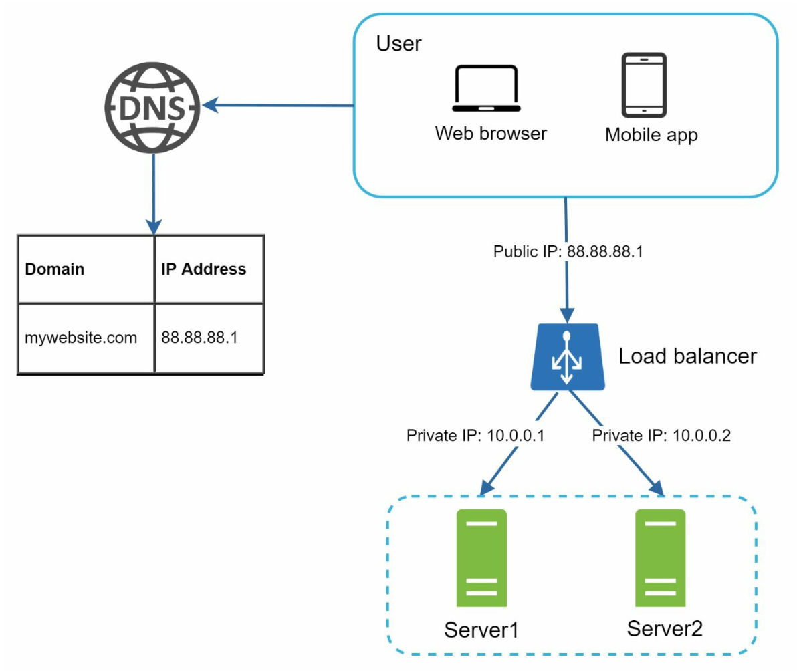
mywebsite.com → 88.88.88.1 — ye LB ka public IP hai, servers ka nahi. User LB ko hit karta hai; LB private IPs (10.0.0.1, 10.0.0.2) se Server1/Server2 tak request forward karta hai. Servers ab internet se directly reachable nahi — better security.Load balancer incoming traffic ko web servers ke set mein evenly distribute karta hai. Servers ke beech communication private IPs pe hota hai.
- Redundancy / failover: Server 1 offline hua to saara traffic Server 2 pe. Health checks se LB unhealthy server ko rotation se hata deta hai.
- Scalability: Traffic badha? Pool mein aur servers add karo, LB automatically unhe traffic dene lagega.
Common algorithms: round robin, least connections, IP hash / consistent hashing (Chapter 05). L4 LB (TCP level, fast) vs L7 LB (HTTP aware — path/header based routing).
/actuator/health endpoint aksar LB health check ke liye use hota hai.5. Database Replication
Web tier to ab redundant hai, lekin DB abhi bhi single point of failure (SPOF) hai. Solution: master–slave (leader–follower) replication.
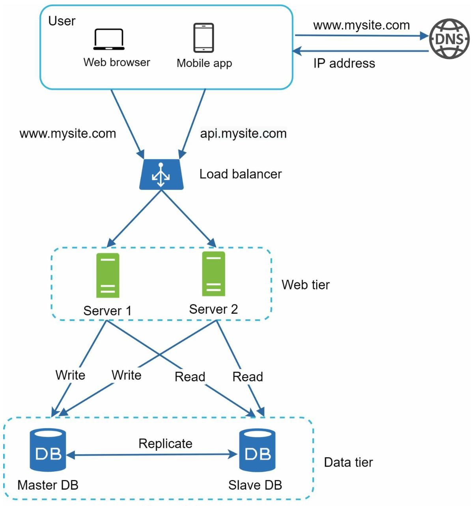
- Master: sirf writes (INSERT/UPDATE/DELETE).
- Slaves: master se copy lete hain, sirf reads serve karte hain. Kyunki most apps mein read:write ratio bahut high hota hai (10:1 ya 100:1), slaves ki count masters se zyada hoti hai.
Fayde
- Better performance: reads parallel mein multiple nodes pe.
- Reliability: ek server natural disaster mein gaya to bhi data doosri jagah safe.
- High availability: ek DB offline ho to bhi site chalti rahe.
Failure handling
- Sirf ek slave hai aur wo down → reads temporarily master pe; naya slave replace kar do.
- Multiple slaves → reads baaki healthy slaves pe redirect.
- Master down → ek slave ko promote karke naya master bana do. Problem: wo slave up-to-date nahi bhi ho sakta (async replication lag), to missing data ko data recovery scripts se fill karna padta hai. Multi-master ya circular replication help kar sakte hain, par wo complex hain.
6. Cache Tier
Cache ek temporary, in-memory data store hai — DB se kaafi fast. Expensive queries ya frequently read data ko cache karke DB ka load kam karte ho.
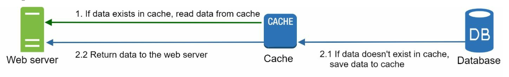
// Memcached-style API (notes ka example)
SECONDS = 1
cache.set('myKey', 'hi there', 3600 * SECONDS)
cache.get('myKey')Cache use karte waqt dhyan rakho
- Kab use karein: data frequently read, rarely modified. Cache volatile hai — restart pe data gaya — isliye important data persistent store mein bhi hona chahiye.
- Expiration (TTL): bina expiry ke data hamesha memory mein. TTL bahut chhota → DB pe baar-baar load; bahut lamba → stale data.
- Consistency: DB aur cache ka write ek transaction mein nahi hota, isliye inconsistency possible. Multi-region mein ye aur mushkil hai.
- Failures mitigate karo: single cache server = SPOF. Multiple cache servers, alag DCs mein. Memory thodi over-provision karo.
- Eviction: cache full → kuch nikalna padega. LRU sabse popular; LFU aur FIFO bhi options.
@Cacheable + Redis cache manager se cache-aside pattern bahut easily lag jata hai. Redis maxmemory-policy allkeys-lru jaisa config eviction control karta hai.7. Content Delivery Network (CDN)
CDN geographically distributed servers ka network hai jo static content (images, CSS, JS, videos) user ke paas se serve karta hai. User jitna CDN server ke paas, utna fast load.
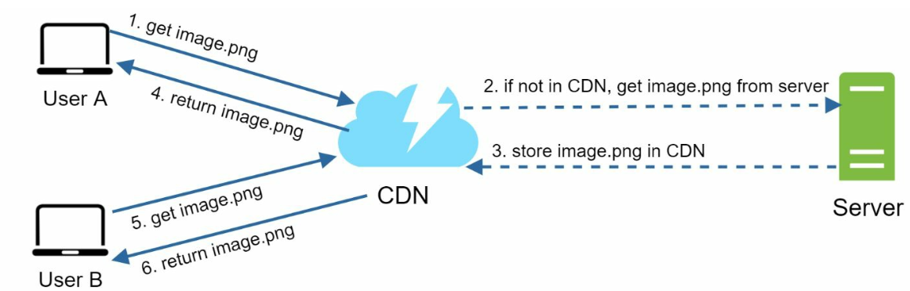
image.png CDN se maangta hai. 2. CDN ke paas nahi hai → origin Server se laata hai. 3. Server image return karta hai aur CDN usse store kar leta hai (optional TTL header ke saath). 4. User A ko image milti hai. 5–6. User B same image maangta hai → ab CDN cache se turant serve (origin tak jaana hi nahi pada).CDN considerations
- Cost: third-party CDN data transfer ka charge karte hain. Rarely used assets CDN pe rakhne ka faayda nahi.
- Cache expiry: time-sensitive content ke liye na zyada lamba (stale) na zyada chhota (origin pe repeat load).
- CDN fallback: CDN outage ho to clients ko detect karke origin se resource lena aana chahiye.
- Invalidation: vendor ka invalidation API use karo, ya better — object versioning (
image.png?v=2) taaki naya URL = naya object.
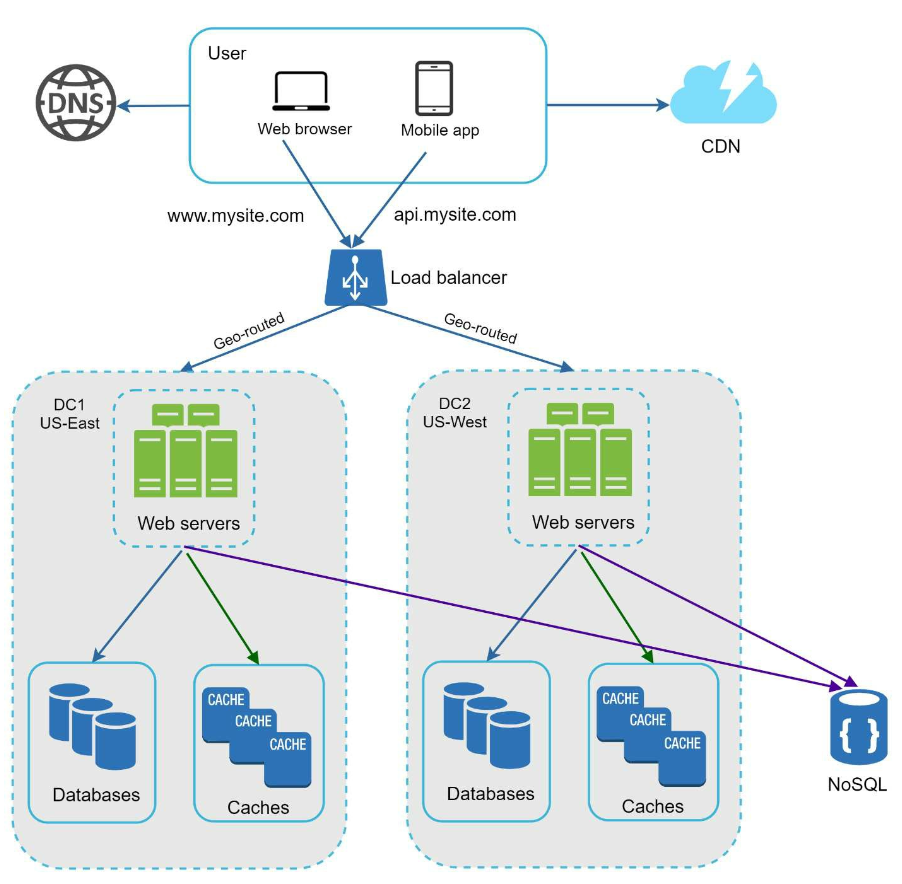
8. Stateless Web Tier
Web tier ko horizontally scale karne ke liye state (jaise user session data) web servers se bahar nikalna padta hai.
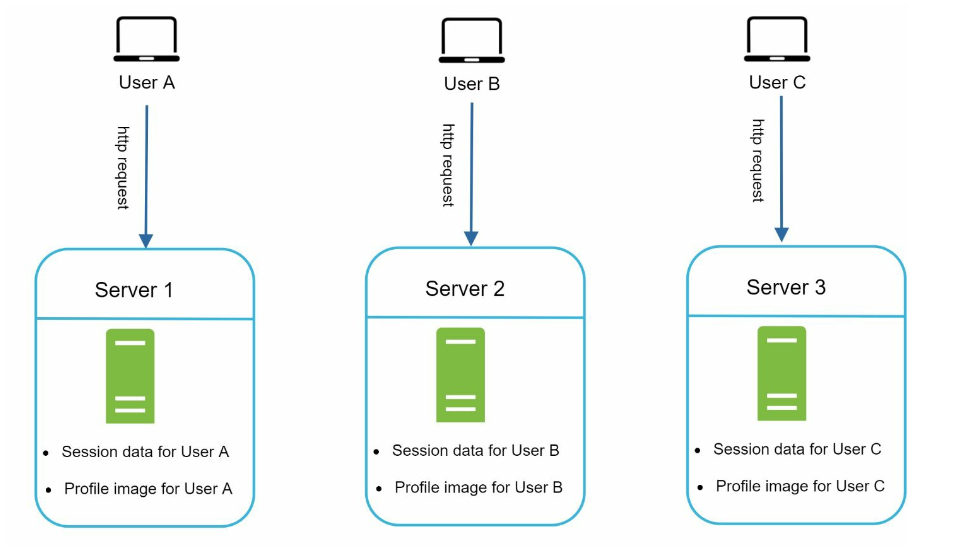
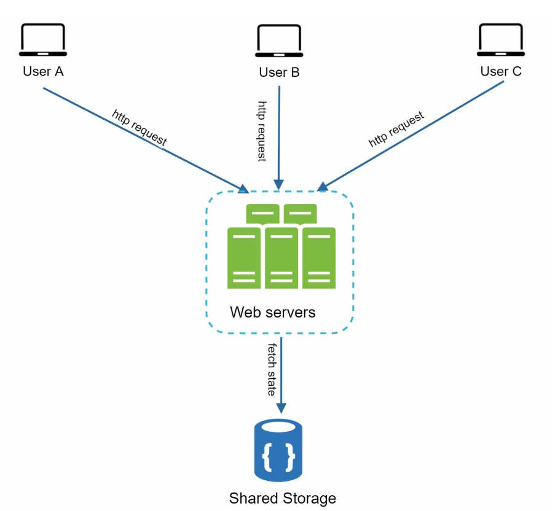
Stateless tier ke fayde: simpler, robust, aur auto-scaling possible (traffic ke hisaab se servers add/remove). Session store ke liye NoSQL ya Redis common hai kyunki ye easily scale hote hain.
spring-session-data-redis HTTP session ko Redis mein rakhta hai — har instance stateless ban jata hai. JWT tokens ek aur approach hai jahan state client ke token mein hi hoti hai.9. Multiple Data Centers
International users aur availability ke liye multiple DCs. Normal operation mein user geoDNS se nearest DC pe route hota hai (geoDNS user ki location ke hisaab se domain ko alag IP pe resolve karta hai). Notes ke example mein traffic US-East aur US-West mein split hota hai (book mein x% / (100-x)%).
Agar ek DC mein badi outage ho, to saara traffic healthy DC pe shift.
Technical challenges
- Traffic redirection: geoDNS jaise tools chahiye jo traffic sahi DC pe bhejein.
- Data synchronization: alag regions ke alag DB/cache ho sakte hain. Failover ke baad user ka data doosre DC mein nahi mila to problem. Common strategy: data ko multiple DCs mein replicate karo (Netflix ka async multi-DC replication famous example hai).
- Test & deployment: app ko alag-alag locations pe test karo; automated deployment tools se saare DCs consistent rakho.
10. Message Queue
Components ko independently scale karne ke liye unhe decouple karna padta hai. Message queue ek durable component hai (memory mein stored, durability ke saath) jo asynchronous communication support karta hai — ek buffer jo async requests distribute karta hai.
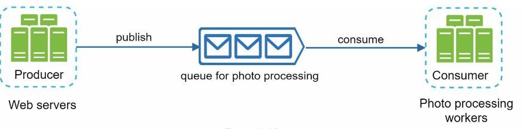
- Producer tab bhi message daal sakta hai jab consumer available nahi; consumer tab bhi padh sakta hai jab producer down hai.
- Example: photo customization (crop, sharpen, blur) time-consuming hai. Web server job queue mein daal deta hai, workers async process karte hain. Queue badi ho rahi hai → aur workers add karo; queue khaali → workers kam karo. Dono side independently scale.
@KafkaListener consumer aur KafkaTemplate producer — consumer group mein instances badhao to partitions ke across parallelism badhti hai (Chapter 19 mein deep dive).11. Logging, Metrics aur Automation
Chhoti site pe ye optional lagte hain, lekin bade business ke liye zaroori.
- Logging: error logs monitor karo — per server ya central service mein aggregate karke (search/view easy).
- Metrics: host level (CPU, memory, disk I/O), aggregated level (DB tier / cache tier performance), key business metrics (DAU, retention, revenue).
- Automation: CI (har commit verify), automated build/test/deploy — developer productivity badhti hai.
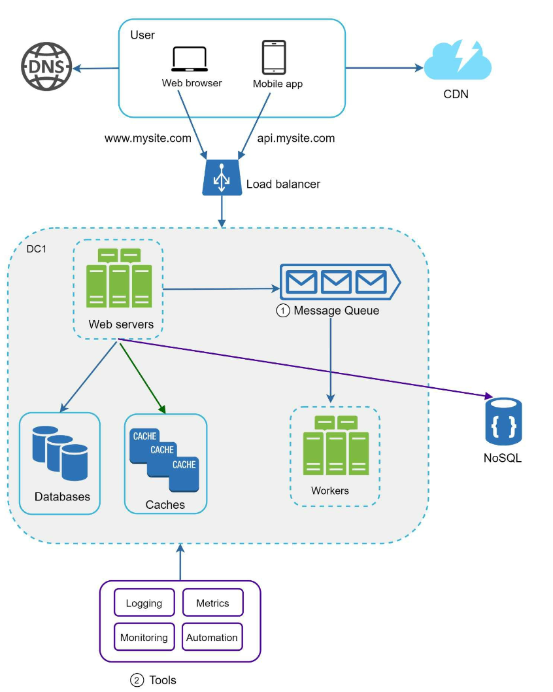
12. Database Scaling: Sharding
Vertical scaling (DB ke liye)
Bada machine lo (cloud pe TBs of RAM wale instances milte hain). Book mein example: Stack Overflow 2013 mein 10M+ monthly unique visitors sirf 1 master DB se handle karta tha. Lekin drawbacks: hardware limit, SPOF ka risk, aur cost bahut high.
Horizontal scaling = Sharding
Bade DB ko chhote, manageable parts — shards — mein todo. Har shard ka schema same, data unique. Example: user_id % 4 se decide hota hai user kis shard mein jaayega.
shard = user_id % 4 // user 0 → shard 0, user 1 → shard 1, ... user 5 → shard 1Sharding key (partition key) sabse critical decision hai: aisi key jo data ko evenly distribute kare aur jisse queries ek hi shard pe route ho jayein.
Challenges
- Resharding: ek shard full ho gaya (fast growth) ya uneven distribution se kuch shards jaldi "exhaust" ho gaye → sharding function badalna aur data move karna padta hai. Consistent hashing (Chapter 05) isko kaafi aasaan banata hai.
- Celebrity / hotspot problem: Justin Bieber, Katy Perry, Lady Gaga sab ek hi shard pe aa gaye to wo shard read load se pigal jaayega. Fix: har celebrity ko apna shard, ya shard ko aur partition karna.
- Joins & de-normalization: shards ke across JOIN mushkil. Common workaround: de-normalize karo taaki query ek hi table pe ho jaaye.
Millions ke beyond: summary architecture
Final architecture mein: web tier stateless, har tier redundant, cache + CDN, multi-DC, message queue se decoupled workers, central logging/metrics, aur sharded data tier. Iske aage aap monolith ko microservices mein todna, aur har service ko apne data store ke saath scale karna discuss kar sakte ho.
- Single server se start karo, 30 second mein flow bolo (DNS → IP → HTTP).
- Har step pe bottleneck naam do, phir component: "DB aur web ek hi box pe → split", "SPOF web tier → LB", "DB SPOF + read load → replication", "read latency → cache", "static asset latency → CDN", "sticky sessions → stateless", "regional outage → multi-DC", "slow tasks coupling → queue", "write volume → sharding".
- Har component ke failure mode pe 1 line: cache down, master down, CDN down, DC down.
- End mein numbers ka hint (Chapter 02) — "reads 10x writes hain, isliye 3 read replicas".
Common follow-up questions
Load balancer khud SPOF nahi hai?
Hai, isliye LBs bhi pair mein (active-passive with floating IP, ya managed cloud LB jo internally redundant hai). DNS level pe bhi multiple LB IPs de sakte ho.
Cache aur DB ko consistent kaise rakhoge?
Common pattern: DB update karo, phir cache entry delete karo (update nahi) — next read fresh value laayega. TTL safety net hai. Strong consistency chahiye to cache bypass ya write-through, latency ki keemat pe.
Sharding key choose karne ka rule?
High cardinality, evenly distributed, aur main query pattern mein present. user_id achha; country bura (India shard overload). Time-based key writes ko ek hi "latest" shard pe daal deti hai — hotspot.
Master failover ke time data loss kaise kam karein?
Semi-sync replication (kam se kam ek replica ack kare tab commit), automated failover tooling, aur promotion se pehle most up-to-date replica choose karna.
Stateless tier mein session kahan?
Shared store (Redis/NoSQL) ya client-side signed token (JWT). Redis TTL se session expiry bhi free mein mil jaati hai.
Key Takeaways
- Web tier ko stateless rakho — state shared store mein.
- Har tier pe redundancy banao — SPOF dhoondo aur hatao.
- Jitna ho sake cache karo; static assets CDN pe.
- Data tier ko sharding se scale karo; sharding key soch-samajh ke.
- Tiers ko alag-alag services mein todo, message queue se decouple karo.
- System ko monitor karo aur automation tools use karo.
- Multi-DC se availability aur latency dono improve — lekin data sync ka cost samjho.